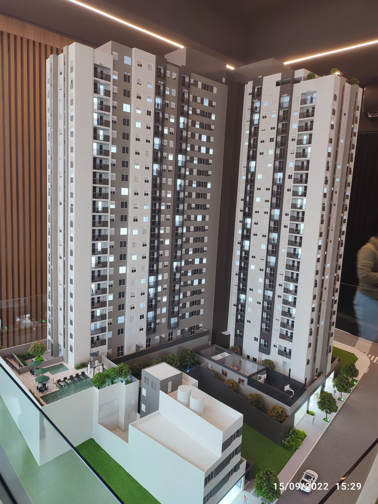

Em setembro, compramos um apartamento na planta e iríamos morar no Alto do Ipiranga. Em 30 meses, tudo estaria do jeito que sonhamos.
Sua mãe mudou para o Paraná, e fomos passar o Natal com ela. Foi a viagem de fim de ano mais estranha até agora, porque, duas semanas depois, ela voltou a morar em São Paulo.